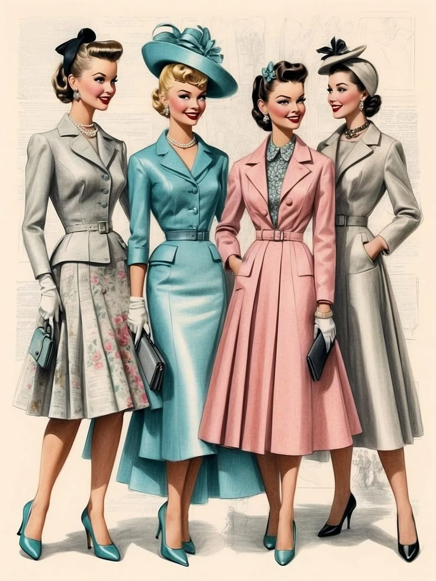
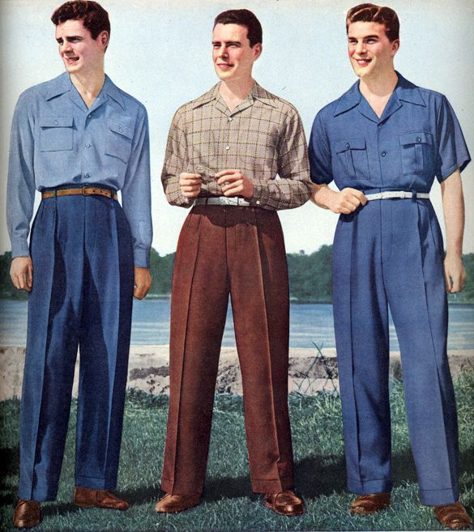

Un estilo marcado por la elegancia, el glamour y la rebeldía juvenil
Tras la Segunda Guerra Mundial, la moda de los años 50 reflejaba un retorno al lujo y la feminidad. Las mujeres buscaban destacar sus curvas, mientras que los hombres adoptaban un estilo clásico con toques de rebeldía juvenil.
Los vestidos con cintura ceñida y faldas amplias eran tendencia. Los tacones altos, los guantes y los peinados voluminosos formaban parte del look diario. El estilo pin-up, con labios rojos y delineado marcado, también fue muy popular.
Los hombres usaban trajes con pantalones de talle alto, chaquetas estructuradas y sombreros. Nació el estilo rebelde con jeans, camisetas blancas y chaquetas de cuero al estilo de James Dean y Elvis Presley.
Se usaban colores vivos, lunares, cuadros y estampados florales. Las telas incluían algodón, seda y nylon. La moda combinaba elegancia con comodidad.